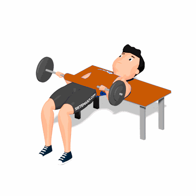

Elevação Pélvica com Barra

O exercício trabalha o fortalecimento dos glúteos e lombar, como também melhora a estabilidade na articulação do quadril.
Ficha Técnica
Tipo: Musculação
Grupo Muscular: Glúteo
Aparelho: Nenhum
Músculos: Nenhum
Como realizar
- Coloque uma barra carregada com anilhas próxima e paralela a um banco;
- Deslize as pernas sob a barra e sente-se no chão com as costas apoiadas na lateral de um banco;
- A barra deve estar acima de seus quadris. Use um colchonete para amortecer o peso da barra;
- Segure a barra de cada lado. Dobre os joelhos e coloque os pés apoiados no chão, separados aproximadamente na largura dos ombros;
- Mantendo o torso rígido, expire ao levantar a barra, estendendo os quadris até que estejam totalmente estendidos;
- Segure e conte até dois e aperte os glúteos. Inspire enquanto abaixa a barra, flexionando os quadris. Não permita que a barra toque o chão.
 RC STORE
RC STORE